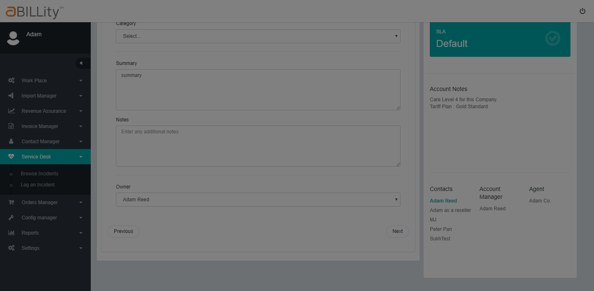
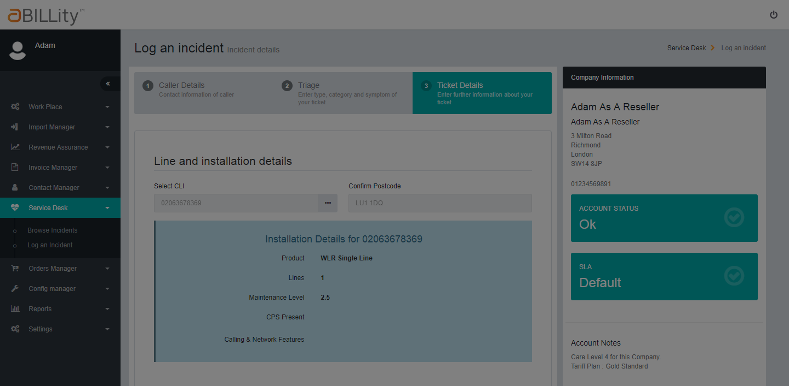

Total Tests
Total Steps
Total Time Taken (Current Run)
1h 41m 30s+602ms
Total Time Taken (Overall)
1h 41m 30s+602ms
Start
2017-10-24 17:29:19
End
2017-10-24 19:10:50
Pass Percentage
Environment
| Param | Value |
|---|---|
| OS | Windows 8.1 |
| User Name | RajeshG |
| Java Version | 1.8.0_91 |
| Host Name | Testing002-PC |
Categories
| Name |
|---|
| @SDSK |
Tests
-
Feature: NA - 184 API smokePack pass2017-10-24 17:29:20 2017-10-24 17:30:01 0h 0m 41s+155ms
Status Timestamp Details -
2017-10-24 17:29:20 2017-10-24 17:29:41 0h 0m 21s+724ms passScenario: the user should be able to see a valid response code when he makes a valid GET request
Status Timestamp StepName Details 17:29:41 I make an API GET request call for sites PASSED 17:29:41 I should be able to see the response 200 PASSED -
2017-10-24 17:29:41 2017-10-24 17:29:46 0h 0m 4s+984ms passScenario: the user should be able to see a invalid response code when he makes aN invalid request code
Status Timestamp StepName Details 17:29:46 I make an invalid API GET request call for sites PASSED 17:29:46 I should be able to see the response 404 PASSED -
2017-10-24 17:29:46 2017-10-24 17:29:55 0h 0m 9s+124ms passScenario: the user should be able to POST a new site
Status Timestamp StepName Details 17:29:54 I make a valid POST request to create a site PASSED 17:29:54 I should be able to see the response 201 PASSED 17:29:55 when I delete the newly created site PASSED 17:29:55 I should be able to see the response 204 PASSED 17:29:55 I should be able to assert site deletion PASSED -
2017-10-24 17:29:55 2017-10-24 17:30:01 0h 0m 5s+323ms passScenario: the user should be able to update existing site details
Status Timestamp StepName Details 17:30:00 I make a valid PATCH request to update an existing site details PASSED 17:30:00 I should be able to see the response 204 PASSED 17:30:00 I should be able to assert the updated site details PASSED
-
-
Feature: NA - 191 API UI Tests pass2017-10-24 17:30:01 2017-10-24 17:33:23 0h 3m 21s+411ms
Status Timestamp Details -
2017-10-24 17:30:01 2017-10-24 17:30:46 0h 0m 44s+739ms passScenario: user should be able to POST a company and a contact through API and create a quote for the same through UI
Status Timestamp StepName Details 17:30:06 I POST a company and a siteContact PASSED 17:30:16 I navigate to the orders manager page and access create quote popup PASSED 17:30:31 I should be able to select the company and contact that was earlier created by API PASSED 17:30:45 I should be able to see the site contact auto populated by the contact posted by the API PASSED -
2017-10-24 17:30:46 2017-10-24 17:31:15 0h 0m 29s+149ms passScenario: user should be able to add a CLI to an existing site
Status Timestamp StepName Details 17:31:00 I am logged in as CP and there is a business customer already created PASSED 17:31:02 I POST a CLI for the site PASSED 17:31:14 I should be able to verify the newly posted CLI PASSED -
2017-10-24 17:31:15 2017-10-24 17:31:22 0h 0m 7s+509ms passScenario: user should be able to assign a package with tariff and free minutes to a business customer
Status Timestamp StepName Details 17:31:21 I POST a company and a package under its site PASSED 17:31:22 I POST a tariff and free minute plan for that particular package PASSED 17:31:22 I should be able to verify the package details on the UI PASSED -
2017-10-24 17:31:22 2017-10-24 17:31:50 0h 0m 27s+648ms passScenario: user should be able to a add a quote to site via API
Status Timestamp StepName Details 17:31:27 I POST a company and a siteContact PASSED 17:31:28 I POST a quote for that particular company PASSED 17:31:47 I should be able to confirm it on the UI PASSED 17:31:49 I should be able to delete the quote via API PASSED -
2017-10-24 17:31:50 2017-10-24 17:32:11 0h 0m 21s+187ms passScenario: user should be able to add and delete a service from an existing quote through API
Status Timestamp StepName Details 17:31:55 I POST a company and a siteContact PASSED 17:31:55 I POST a quote for that particular company PASSED 17:31:58 I send a POST request to add a service to the quote PASSED 17:32:09 I should be able to verify the added service on the UI PASSED 17:32:10 when I DELETE the service through API PASSED 17:32:11 I should be able to confirm that on the UI PASSED -
2017-10-24 17:32:11 2017-10-24 17:32:50 0h 0m 38s+200ms passScenario: user should be able to POST a service charge under desired site
Status Timestamp StepName Details 17:32:17 I am logged in as CP PASSED 17:32:41 I POST a service charge under the site that is recently created PASSED 17:32:49 I should be able to verify the new service charge under site menu PASSED -
2017-10-24 17:32:50 2017-10-24 17:33:23 0h 0m 32s+979ms passScenario: verify that a service charge POSTed should base all pricing calculations as per FrequencyTypeId (in CreateNewServiceCharge) rather then rc_frequency_type_ID (in recurringCharge_Types table)
Status Timestamp StepName Details 17:33:19 I am logged in as CP and a serviceCharge with unmatched frequency type has been POSTed PASSED 17:33:22 I perform a GET request on the charge details PASSED 17:33:22 The pricing values should be based on the FrequencyTypeID from the request PASSED
-
-
Feature: NA - 145 SDSK CP Agent and Reseller And Search Accounts fail2017-10-24 17:33:23 2017-10-24 19:01:11 1h 27m 48s+528ms
Status Timestamp Details -
2017-10-24 17:33:23 2017-10-24 17:35:02 0h 1m 39s+520ms passScenario: login as a CP and search the service desk menu for accounts
Status Timestamp StepName Details 17:33:35 I am logged in as CP and assign service desk permissions PASSED 17:34:22 have created a business customer and assigned required data PASSED 17:34:25 I am on the service desk page PASSED 17:35:01 I should be able search by Account name, Account number & CLI and get all the relevant details in the CP search PASSED -
2017-10-24 17:35:02 2017-10-24 18:59:41 1h 24m 38s+527ms failScenario: login as an agent and search the service desk menu for accounts
Status Timestamp StepName Details 17:36:08 I am logged in as agent and CP has already assigned me a business customer PASSED 17:36:11 I am on the service desk page as an agent PASSED 18:59:39 I should be able search by Account name, Account number & CLI and get all the relevant details in the agent search org.openqa.selenium.TimeoutException: Expected condition failed: waiting for presence of element located by: By.xpath: //td[contains(text(),'business customer agent assigned')] (tried for 5000 second(s) with 3 SECONDS interval) at org.openqa.selenium.support.ui.FluentWait.timeoutException(FluentWait.java:263) at org.openqa.selenium.support.ui.FluentWait.until(FluentWait.java:231) at com.unionstreet.support.ElementUtils.waitForElementVisibleForWLR3Page(ElementUtils.java:107) at com.unionstreet.com.unionstreet.NxTier.pages.ServiceDeskPage.searchResultsForServiceDesk(ServiceDeskPage.java:59) at com.unionstreet.NxTier.stepDefs.SDSK.NA145_SDSK_CP_Agent_Reseller_Login_And_Search_Accounts_stepDefs.iShouldBeAbleSearchByAccountNameAccountNumberCLIAndGetAllTheRelevantDetailsInTheAgentSearch(NA145_SDSK_CP_Agent_Reseller_Login_And_Search_Accounts_stepDefs.java:141) at ✽.Then I should be able search by Account name, Account number & CLI and get all the relevant details in the agent search(com/unionstreet/NxTier/SDSK/NA145_SDSK_CP_Agent_Reseller_Login_And_Search_Accounts.feature:13) Caused by: org.openqa.selenium.NoSuchElementException: Cannot locate an element using By.xpath: //td[contains(text(),'business customer agent assigned')] For documentation on this error, please visit: http://seleniumhq.org/exceptions/no_such_element.html Build info: version: '3.6.0', revision: '6fbf3ec767', time: '2017-09-27T16:15:40.131Z' System info: host: 'TESTING002-PC', ip: '10.1.8.97', os.name: 'Windows 8.1', os.arch: 'amd64', os.version: '6.3', java.version: '1.8.0_91' Driver info: driver.version: unknown at org.openqa.selenium.support.ui.ExpectedConditions.lambda$findElement$0(ExpectedConditions.java:882) at java.util.Optional.orElseThrow(Optional.java:290) at org.openqa.selenium.support.ui.ExpectedConditions.findElement(ExpectedConditions.java:881) at org.openqa.selenium.support.ui.ExpectedConditions.access$000(ExpectedConditions.java:43) at org.openqa.selenium.support.ui.ExpectedConditions$6.apply(ExpectedConditions.java:182) at org.openqa.selenium.support.ui.ExpectedConditions$6.apply(ExpectedConditions.java:179) at org.openqa.selenium.support.ui.FluentWait.until(FluentWait.java:208) at com.unionstreet.support.ElementUtils.waitForElementVisibleForWLR3Page(ElementUtils.java:107) at com.unionstreet.com.unionstreet.NxTier.pages.ServiceDeskPage.searchResultsForServiceDesk(ServiceDeskPage.java:59) at com.unionstreet.NxTier.stepDefs.SDSK.NA145_SDSK_CP_Agent_Reseller_Login_And_Search_Accounts_stepDefs.iShouldBeAbleSearchByAccountNameAccountNumberCLIAndGetAllTheRelevantDetailsInTheAgentSearch(NA145_SDSK_CP_Agent_Reseller_Login_And_Search_Accounts_stepDefs.java:141) at sun.reflect.NativeMethodAccessorImpl.invoke0(Native Method) at sun.reflect.NativeMethodAccessorImpl.invoke(NativeMethodAccessorImpl.java:62) at sun.reflect.DelegatingMethodAccessorImpl.invoke(DelegatingMethodAccessorImpl.java:43) at java.lang.reflect.Method.invoke(Method.java:498) at cucumber.runtime.Utils$1.call(Utils.java:40) at cucumber.runtime.Timeout.timeout(Timeout.java:16) at cucumber.runtime.Utils.invoke(Utils.java:34) at cucumber.runtime.java.JavaStepDefinition.execute(JavaStepDefinition.java:38) at cucumber.runtime.StepDefinitionMatch.runStep(StepDefinitionMatch.java:37) at cucumber.runtime.Runtime.runStep(Runtime.java:300) at cucumber.runtime.model.StepContainer.runStep(StepContainer.java:44) at cucumber.runtime.model.StepContainer.runSteps(StepContainer.java:39) at cucumber.runtime.model.CucumberScenario.run(CucumberScenario.java:44) at cucumber.runtime.junit.ExecutionUnitRunner.run(ExecutionUnitRunner.java:102) at cucumber.runtime.junit.FeatureRunner.runChild(FeatureRunner.java:63) at cucumber.runtime.junit.FeatureRunner.runChild(FeatureRunner.java:18) at org.junit.runners.ParentRunner$3.run(ParentRunner.java:290) at org.junit.runners.ParentRunner$1.schedule(ParentRunner.java:71) at org.junit.runners.ParentRunner.runChildren(ParentRunner.java:288) at org.junit.runners.ParentRunner.access$000(ParentRunner.java:58) at org.junit.runners.ParentRunner$2.evaluate(ParentRunner.java:268) at org.junit.runners.ParentRunner.run(ParentRunner.java:363) at cucumber.runtime.junit.FeatureRunner.run(FeatureRunner.java:70) at cucumber.api.junit.Cucumber.runChild(Cucumber.java:95) at cucumber.api.junit.Cucumber.runChild(Cucumber.java:38) at org.junit.runners.ParentRunner$3.run(ParentRunner.java:290) at org.junit.runners.ParentRunner$1.schedule(ParentRunner.java:71) at org.junit.runners.ParentRunner.runChildren(ParentRunner.java:288) at org.junit.runners.ParentRunner.access$000(ParentRunner.java:58) at org.junit.runners.ParentRunner$2.evaluate(ParentRunner.java:268) at org.junit.runners.ParentRunner.run(ParentRunner.java:363) at cucumber.api.junit.Cucumber.run(Cucumber.java:100) at org.junit.runner.JUnitCore.run(JUnitCore.java:137) at com.intellij.junit4.JUnit4IdeaTestRunner.startRunnerWithArgs(JUnit4IdeaTestRunner.java:117) at com.intellij.junit4.JUnit4IdeaTestRunner.startRunnerWithArgs(JUnit4IdeaTestRunner.java:42) at com.intellij.rt.execution.junit.JUnitStarter.prepareStreamsAndStart(JUnitStarter.java:262) at com.intellij.rt.execution.junit.JUnitStarter.main(JUnitStarter.java:84) at sun.reflect.NativeMethodAccessorImpl.invoke0(Native Method) at sun.reflect.NativeMethodAccessorImpl.invoke(NativeMethodAccessorImpl.java:62) at sun.reflect.DelegatingMethodAccessorImpl.invoke(DelegatingMethodAccessorImpl.java:43) at java.lang.reflect.Method.invoke(Method.java:498) at com.intellij.rt.execution.application.AppMain.main(AppMain.java:147) 18:59:40 
-
2017-10-24 18:59:41 2017-10-24 19:01:11 0h 1m 30s+481ms passScenario: login as a reseller and search the service desk menu for accounts
Status Timestamp StepName Details 19:00:49 I am logged in a reseller and CP has already created a site under me PASSED 19:00:53 I am on the service desk page as a reseller PASSED 19:01:10 I should be able search by Account name, Account number & CLI and get all the relevant details in the reseller search PASSED
-
-
Feature: NA - 149 SDSK login as a CP, Agent and Reseller and search for Incidents pass2017-10-24 19:01:11 2017-10-24 19:02:19 0h 1m 7s+354ms
Status Timestamp Details -
2017-10-24 19:01:11 2017-10-24 19:01:39 0h 0m 27s+997ms passScenario: login as a CP and search for incidents
Status Timestamp StepName Details 19:01:26 I am logged in as CP and assign service desk permissions PASSED 19:01:35 I navigate to service desk page and provide relevant info as a CP PASSED 19:01:38 I should be able to search and find incidents relevant to CP PASSED -
2017-10-24 19:01:39 2017-10-24 19:01:59 0h 0m 19s+768ms passScenario: login as an agent and search for incidents
Status Timestamp StepName Details 19:01:46 I am logged in as agent PASSED 19:01:55 I navigate to service desk page and provide relevant info as an agent PASSED 19:01:58 I should be able to search and find incidents relevant to agent PASSED -
2017-10-24 19:01:59 2017-10-24 19:02:19 0h 0m 19s+589ms passScenario: login as an agent and search for incidents
Status Timestamp StepName Details 19:02:06 I am logged in as reseller PASSED 19:02:15 I navigate to service desk page and provide relevant info as a reseller PASSED 19:02:18 I should be able to search and find incidents relevant to reseller PASSED
-
-
Feature: NA - 150 SDSK CP, agent and reseller incident button functionality pass2017-10-24 19:02:19 2017-10-24 19:06:25 0h 4m 6s+438ms@SDSK
Status Timestamp Details -
2017-10-24 19:02:19 2017-10-24 19:03:44 0h 1m 25s+138ms passScenario: login as a CP, agent and reseller and check the functionality of the indecent button by placing account on hold/active with and with-out SLA
Status Timestamp StepName Details 19:02:30 I am logged in with " " and " " PASSED 19:02:39 I access service desk page and search for a " " with " " PASSED 19:03:41 I should be able to check the functionality of the create incident button by searching for " " and switching between various stages of account hold/active status with and without SLA for company with " " PASSED -
2017-10-24 19:03:44 2017-10-24 19:05:06 0h 1m 21s+862ms passScenario: login as a CP, agent and reseller and check the functionality of the indecent button by placing account on hold/active with and with-out SLA
Status Timestamp StepName Details 19:03:53 I am logged in with "CPlogin" and "password" PASSED 19:04:02 I access service desk page and search for a "business customer created by CP" with "138" PASSED 19:05:03 I should be able to check the functionality of the create incident button by searching for "business customer created by CP" and switching between various stages of account hold/active status with and without SLA for company with "138" PASSED -
2017-10-24 19:05:06 2017-10-24 19:06:25 0h 1m 19s+438ms passScenario: login as a CP, agent and reseller and check the functionality of the indecent button by placing account on hold/active with and with-out SLA
Status Timestamp StepName Details 19:05:15 I am logged in with "agentlogin" and "password" PASSED 19:05:24 I access service desk page and search for a "business customer agent assigned" with "139" PASSED 19:06:22 I should be able to check the functionality of the create incident button by searching for "business customer agent assigned" and switching between various stages of account hold/active status with and without SLA for company with "139" PASSED
-
-
Feature: NA - 151 SDSK URL Manipulation pass2017-10-24 19:06:25 2017-10-24 19:07:48 0h 1m 22s+700ms@SDSK
Status Timestamp Details -
2017-10-24 19:06:25 2017-10-24 19:07:08 0h 0m 42s+766ms passScenario: login as a CP and perform URL manipulation tests
Status Timestamp StepName Details 19:06:31 I am logged in with "resellerlogin" and "password" PASSED 19:06:56 I access service desk page and search for a "business customer reseller" with "109" PASSED 19:07:01 I should be able to check the functionality of the create incident button by searching for "business customer reseller" and switching between various stages of account hold/active status with and without SLA for company with "109" PASSED 19:07:07 I am logged in with " " and " " without access rights PASSED -
2017-10-24 19:07:08 2017-10-24 19:07:28 0h 0m 20s+71ms passScenario: login as a CP and perform URL manipulation tests
Status Timestamp StepName Details 19:07:13 I try to navigate to service desk page the access should be denied PASSED 19:07:16 when I am granted the service desk access and I login with " " and " " PASSED 19:07:21 Based on the status of the account and SLA, I should be able to or unable to log a ticket for business customer with " " and " " via pasting the URL PASSED 19:07:27 I am logged in with "CPlogin" and "password" without access rights PASSED -
2017-10-24 19:07:28 2017-10-24 19:07:48 0h 0m 19s+862ms passScenario: login as a CP and perform URL manipulation tests
Status Timestamp StepName Details 19:07:33 I try to navigate to service desk page the access should be denied PASSED 19:07:36 when I am granted the service desk access and I login with "CPlogin" and "password" PASSED 19:07:40 Based on the status of the account and SLA, I should be able to or unable to log a ticket for business customer with "138" and "166" via pasting the URL PASSED 19:07:47 I am logged in with "agentlogin" and "password" without access rights PASSED
-
-
Feature: Na - 159 SDSK Login Incident Caller Details pass2017-10-24 19:07:48 2017-10-24 19:08:31 0h 0m 43s+343ms
Status Timestamp Details -
2017-10-24 19:07:48 2017-10-24 19:08:31 0h 0m 43s+343ms passScenario: Login as a CP and navigate to caller details of incident wizard
Status Timestamp StepName Details 19:07:57 I try to navigate to service desk page the access should be denied PASSED 19:08:18 when I am granted the service desk access and I login with "agentlogin" and "password" PASSED 19:08:28 Based on the status of the account and SLA, I should be able to or unable to log a ticket for business customer with "139" and "167" via pasting the URL PASSED
-
-
Feature: NA - 160 SDSK Login Incident Triage fail2017-10-24 19:08:31 2017-10-24 19:09:38 0h 1m 6s+355ms
Status Timestamp Details -
2017-10-24 19:08:31 2017-10-24 19:09:38 0h 1m 6s+355ms failScenario: Login as a CP and navigate to triage of incident wizard
Status Timestamp StepName Details 19:08:37 I am logged in with "resellerlogin" and "password" without access rights PASSED 19:08:57 I try to navigate to service desk page the access should be denied PASSED 19:09:37 when I am granted the service desk access and I login with "resellerlogin" and "password" org.openqa.selenium.TimeoutException: Expected condition failed: waiting for presence of element located by: By.xpath: //h1[contains(text(),'Incident #677')] (tried for 20 second(s) with 3 SECONDS interval) at org.openqa.selenium.support.ui.FluentWait.timeoutException(FluentWait.java:263) at org.openqa.selenium.support.ui.FluentWait.until(FluentWait.java:231) at com.unionstreet.support.ElementUtils.waitForElementVisible(ElementUtils.java:97) at com.unionstreet.com.unionstreet.NxTier.pages.ServiceDesk_CallerDetails_TriagePage.non_OpenReachIncident_Triage(ServiceDesk_CallerDetails_TriagePage.java:179) at com.unionstreet.NxTier.stepDefs.SDSK.NA160_SDSK_Login_Incident__Triage_stepDefs.iShouldBeAbleToCheckAllTheValidationsAndPopulateIt(NA160_SDSK_Login_Incident__Triage_stepDefs.java:33) at ✽.Then I should be able to check all the validations and populate it(com/unionstreet/NxTier/SDSK/NA160_SDSK_Login_Incident_Triage.feature:7) Caused by: org.openqa.selenium.NoSuchElementException: Cannot locate an element using By.xpath: //h1[contains(text(),'Incident #677')] For documentation on this error, please visit: http://seleniumhq.org/exceptions/no_such_element.html Build info: version: '3.6.0', revision: '6fbf3ec767', time: '2017-09-27T16:15:40.131Z' System info: host: 'TESTING002-PC', ip: '10.1.8.97', os.name: 'Windows 8.1', os.arch: 'amd64', os.version: '6.3', java.version: '1.8.0_91' Driver info: driver.version: unknown at org.openqa.selenium.support.ui.ExpectedConditions.lambda$findElement$0(ExpectedConditions.java:882) at java.util.Optional.orElseThrow(Optional.java:290) at org.openqa.selenium.support.ui.ExpectedConditions.findElement(ExpectedConditions.java:881) at org.openqa.selenium.support.ui.ExpectedConditions.access$000(ExpectedConditions.java:43) at org.openqa.selenium.support.ui.ExpectedConditions$6.apply(ExpectedConditions.java:182) at org.openqa.selenium.support.ui.ExpectedConditions$6.apply(ExpectedConditions.java:179) at org.openqa.selenium.support.ui.FluentWait.until(FluentWait.java:208) at com.unionstreet.support.ElementUtils.waitForElementVisible(ElementUtils.java:97) at com.unionstreet.com.unionstreet.NxTier.pages.ServiceDesk_CallerDetails_TriagePage.non_OpenReachIncident_Triage(ServiceDesk_CallerDetails_TriagePage.java:179) at com.unionstreet.NxTier.stepDefs.SDSK.NA160_SDSK_Login_Incident__Triage_stepDefs.iShouldBeAbleToCheckAllTheValidationsAndPopulateIt(NA160_SDSK_Login_Incident__Triage_stepDefs.java:33) at sun.reflect.NativeMethodAccessorImpl.invoke0(Native Method) at sun.reflect.NativeMethodAccessorImpl.invoke(NativeMethodAccessorImpl.java:62) at sun.reflect.DelegatingMethodAccessorImpl.invoke(DelegatingMethodAccessorImpl.java:43) at java.lang.reflect.Method.invoke(Method.java:498) at cucumber.runtime.Utils$1.call(Utils.java:40) at cucumber.runtime.Timeout.timeout(Timeout.java:16) at cucumber.runtime.Utils.invoke(Utils.java:34) at cucumber.runtime.java.JavaStepDefinition.execute(JavaStepDefinition.java:38) at cucumber.runtime.StepDefinitionMatch.runStep(StepDefinitionMatch.java:37) at cucumber.runtime.Runtime.runStep(Runtime.java:300) at cucumber.runtime.model.StepContainer.runStep(StepContainer.java:44) at cucumber.runtime.model.StepContainer.runSteps(StepContainer.java:39) at cucumber.runtime.model.CucumberScenario.run(CucumberScenario.java:44) at cucumber.runtime.junit.ExecutionUnitRunner.run(ExecutionUnitRunner.java:102) at cucumber.runtime.junit.FeatureRunner.runChild(FeatureRunner.java:63) at cucumber.runtime.junit.FeatureRunner.runChild(FeatureRunner.java:18) at org.junit.runners.ParentRunner$3.run(ParentRunner.java:290) at org.junit.runners.ParentRunner$1.schedule(ParentRunner.java:71) at org.junit.runners.ParentRunner.runChildren(ParentRunner.java:288) at org.junit.runners.ParentRunner.access$000(ParentRunner.java:58) at org.junit.runners.ParentRunner$2.evaluate(ParentRunner.java:268) at org.junit.runners.ParentRunner.run(ParentRunner.java:363) at cucumber.runtime.junit.FeatureRunner.run(FeatureRunner.java:70) at cucumber.api.junit.Cucumber.runChild(Cucumber.java:95) at cucumber.api.junit.Cucumber.runChild(Cucumber.java:38) at org.junit.runners.ParentRunner$3.run(ParentRunner.java:290) at org.junit.runners.ParentRunner$1.schedule(ParentRunner.java:71) at org.junit.runners.ParentRunner.runChildren(ParentRunner.java:288) at org.junit.runners.ParentRunner.access$000(ParentRunner.java:58) at org.junit.runners.ParentRunner$2.evaluate(ParentRunner.java:268) at org.junit.runners.ParentRunner.run(ParentRunner.java:363) at cucumber.api.junit.Cucumber.run(Cucumber.java:100) at org.junit.runner.JUnitCore.run(JUnitCore.java:137) at com.intellij.junit4.JUnit4IdeaTestRunner.startRunnerWithArgs(JUnit4IdeaTestRunner.java:117) at com.intellij.junit4.JUnit4IdeaTestRunner.startRunnerWithArgs(JUnit4IdeaTestRunner.java:42) at com.intellij.rt.execution.junit.JUnitStarter.prepareStreamsAndStart(JUnitStarter.java:262) at com.intellij.rt.execution.junit.JUnitStarter.main(JUnitStarter.java:84) at sun.reflect.NativeMethodAccessorImpl.invoke0(Native Method) at sun.reflect.NativeMethodAccessorImpl.invoke(NativeMethodAccessorImpl.java:62) at sun.reflect.DelegatingMethodAccessorImpl.invoke(DelegatingMethodAccessorImpl.java:43) at java.lang.reflect.Method.invoke(Method.java:498) at com.intellij.rt.execution.application.AppMain.main(AppMain.java:147) 19:09:37 
-
-
Feature: NA - 165 SDSK Populate OIDs fail2017-10-24 19:09:38 2017-10-24 19:10:50 0h 1m 12s+262ms
Status Timestamp Details -
2017-10-24 19:09:38 2017-10-24 19:10:50 0h 1m 12s+262ms failScenario: login as a CP and obtain installation details of the selected CLI
Status Timestamp StepName Details 19:09:44 Based on the status of the account and SLA, I should be able to or unable to log a ticket for business customer with "109" and "168" via pasting the URL PASSED 19:10:15 I am logged in as AdamR PASSED 19:10:47 I navigate to the caller details page of the incident wizard org.openqa.selenium.TimeoutException: Expected condition failed: waiting for presence of element located by: By.xpath: //strong[contains(text(),'WLR Single Line')] (tried for 20 second(s) with 3 SECONDS interval) at org.openqa.selenium.support.ui.FluentWait.timeoutException(FluentWait.java:263) at org.openqa.selenium.support.ui.FluentWait.until(FluentWait.java:231) at com.unionstreet.support.ElementUtils.waitForElementVisible(ElementUtils.java:97) at com.unionstreet.com.unionstreet.NxTier.pages.ServiceDesk_TicketDetailsPage.selectCLIToObtainInstallationDetails(ServiceDesk_TicketDetailsPage.java:188) at com.unionstreet.NxTier.stepDefs.SDSK.NA165_SDSK_Populate_OIDs_stepDefs.iShouldBeAbleToSelectACLIAndObtainItsInstallationDetails(NA165_SDSK_Populate_OIDs_stepDefs.java:31) at ✽.Then I should be able to select a CLI and obtain its installation details(com/unionstreet/NxTier/SDSK/NA165_SDSK_Populate_OIDs.feature:6) Caused by: org.openqa.selenium.NoSuchElementException: Cannot locate an element using By.xpath: //strong[contains(text(),'WLR Single Line')] For documentation on this error, please visit: http://seleniumhq.org/exceptions/no_such_element.html Build info: version: '3.6.0', revision: '6fbf3ec767', time: '2017-09-27T16:15:40.131Z' System info: host: 'TESTING002-PC', ip: '10.1.8.97', os.name: 'Windows 8.1', os.arch: 'amd64', os.version: '6.3', java.version: '1.8.0_91' Driver info: driver.version: unknown at org.openqa.selenium.support.ui.ExpectedConditions.lambda$findElement$0(ExpectedConditions.java:882) at java.util.Optional.orElseThrow(Optional.java:290) at org.openqa.selenium.support.ui.ExpectedConditions.findElement(ExpectedConditions.java:881) at org.openqa.selenium.support.ui.ExpectedConditions.access$000(ExpectedConditions.java:43) at org.openqa.selenium.support.ui.ExpectedConditions$6.apply(ExpectedConditions.java:182) at org.openqa.selenium.support.ui.ExpectedConditions$6.apply(ExpectedConditions.java:179) at org.openqa.selenium.support.ui.FluentWait.until(FluentWait.java:208) at com.unionstreet.support.ElementUtils.waitForElementVisible(ElementUtils.java:97) at com.unionstreet.com.unionstreet.NxTier.pages.ServiceDesk_TicketDetailsPage.selectCLIToObtainInstallationDetails(ServiceDesk_TicketDetailsPage.java:188) at com.unionstreet.NxTier.stepDefs.SDSK.NA165_SDSK_Populate_OIDs_stepDefs.iShouldBeAbleToSelectACLIAndObtainItsInstallationDetails(NA165_SDSK_Populate_OIDs_stepDefs.java:31) at sun.reflect.NativeMethodAccessorImpl.invoke0(Native Method) at sun.reflect.NativeMethodAccessorImpl.invoke(NativeMethodAccessorImpl.java:62) at sun.reflect.DelegatingMethodAccessorImpl.invoke(DelegatingMethodAccessorImpl.java:43) at java.lang.reflect.Method.invoke(Method.java:498) at cucumber.runtime.Utils$1.call(Utils.java:40) at cucumber.runtime.Timeout.timeout(Timeout.java:16) at cucumber.runtime.Utils.invoke(Utils.java:34) at cucumber.runtime.java.JavaStepDefinition.execute(JavaStepDefinition.java:38) at cucumber.runtime.StepDefinitionMatch.runStep(StepDefinitionMatch.java:37) at cucumber.runtime.Runtime.runStep(Runtime.java:300) at cucumber.runtime.model.StepContainer.runStep(StepContainer.java:44) at cucumber.runtime.model.StepContainer.runSteps(StepContainer.java:39) at cucumber.runtime.model.CucumberScenario.run(CucumberScenario.java:44) at cucumber.runtime.junit.ExecutionUnitRunner.run(ExecutionUnitRunner.java:102) at cucumber.runtime.junit.FeatureRunner.runChild(FeatureRunner.java:63) at cucumber.runtime.junit.FeatureRunner.runChild(FeatureRunner.java:18) at org.junit.runners.ParentRunner$3.run(ParentRunner.java:290) at org.junit.runners.ParentRunner$1.schedule(ParentRunner.java:71) at org.junit.runners.ParentRunner.runChildren(ParentRunner.java:288) at org.junit.runners.ParentRunner.access$000(ParentRunner.java:58) at org.junit.runners.ParentRunner$2.evaluate(ParentRunner.java:268) at org.junit.runners.ParentRunner.run(ParentRunner.java:363) at cucumber.runtime.junit.FeatureRunner.run(FeatureRunner.java:70) at cucumber.api.junit.Cucumber.runChild(Cucumber.java:95) at cucumber.api.junit.Cucumber.runChild(Cucumber.java:38) at org.junit.runners.ParentRunner$3.run(ParentRunner.java:290) at org.junit.runners.ParentRunner$1.schedule(ParentRunner.java:71) at org.junit.runners.ParentRunner.runChildren(ParentRunner.java:288) at org.junit.runners.ParentRunner.access$000(ParentRunner.java:58) at org.junit.runners.ParentRunner$2.evaluate(ParentRunner.java:268) at org.junit.runners.ParentRunner.run(ParentRunner.java:363) at cucumber.api.junit.Cucumber.run(Cucumber.java:100) at org.junit.runner.JUnitCore.run(JUnitCore.java:137) at com.intellij.junit4.JUnit4IdeaTestRunner.startRunnerWithArgs(JUnit4IdeaTestRunner.java:117) at com.intellij.junit4.JUnit4IdeaTestRunner.startRunnerWithArgs(JUnit4IdeaTestRunner.java:42) at com.intellij.rt.execution.junit.JUnitStarter.prepareStreamsAndStart(JUnitStarter.java:262) at com.intellij.rt.execution.junit.JUnitStarter.main(JUnitStarter.java:84) at sun.reflect.NativeMethodAccessorImpl.invoke0(Native Method) at sun.reflect.NativeMethodAccessorImpl.invoke(NativeMethodAccessorImpl.java:62) at sun.reflect.DelegatingMethodAccessorImpl.invoke(DelegatingMethodAccessorImpl.java:43) at java.lang.reflect.Method.invoke(Method.java:498) at com.intellij.rt.execution.application.AppMain.main(AppMain.java:147) 19:10:47 
-